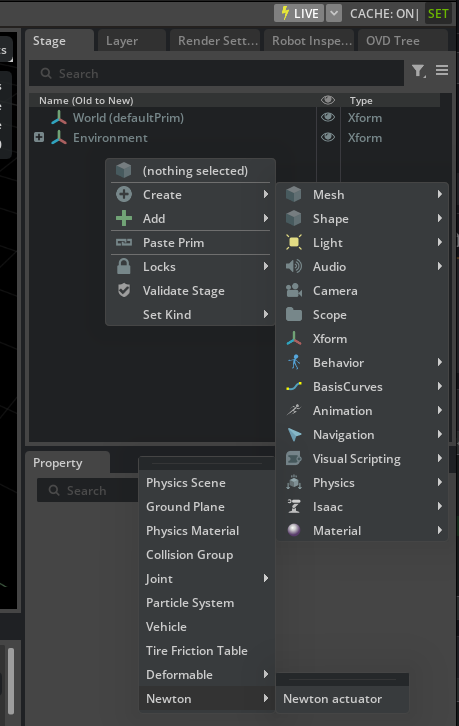

Newton 机器人设置技巧与最佳实践#
在 Newton 下正确运行机器人资产涉及三个相互关联的方面：使用正确的参数进行导入、将物理属性写入正确的 USD 层，以及选择与 Newton 后端匹配的致动器公式。本页将按顺序逐一介绍这些方面，从首次启动到迁移现有的 PhysX 资产。
有关完整的资产层层次结构，请参阅 Asset Structure。有关 Newton 物理后端的参考，请参阅 Newton Physics Backend。
使用 Newton 启动 Isaac Sim#
首先，使用专用的 Newton 应用程序入口点启动 Isaac Sim。这会将 Newton 激活为默认物理后端并禁用 PhysX。
./isaac-sim.newton.sh
isaac-sim.newton.bat
有关在独立脚本中以编程方式切换后端，请参阅 Newton Physics Backend。Newton 在仿真播放期间不会应用 USD 属性编辑；请在修改属性之前停止仿真。请参阅 Runtime change tracking。
导入机器人资产#
源格式决定了自动保留多少 MuJoCo 执行器配置。
MJCF 资产#
MJCF 导入器会将原生 MuJoCo 参数（增益类型、偏置类型、增益参数和偏置参数）直接保留在导入的资产中。生成的 mujoco.usda 层已包含 Newton 所需的执行器配置，因此对于 MJCF 源，无需手动编写属性。如果需要机器人保留其原生 MuJoCo 执行器行为，请使用 MJCF 源。
有关完整的属性映射，请参阅 MJCF 导入器参考。
URDF 资产#
URDF 不包含原生 MuJoCo 执行器参数。URDF 导入器在多物理场转换期间会派生出兼容的 USD Physics、PhysX 和 MuJoCo 属性，一次性生成 physics.usd、physx.usda 和 mujoco.usda 层。对于 PhysX 变体，请使用 增益调优扩展 来调整刚度和阻尼。对于 Newton 变体，请在 physics 变体中调整 USD Physics 驱动，或在 mujoco 变体中手动设置 MuJoCo 执行器属性。
有关完整的转换表，请参阅 URDF 导入器参考。
如果您的资产未通过任一导入器导入——例如，它是手动创建的或遗留的 PhysX 资产——则 mujoco.usda 层尚不存在。在这种情况下，请先运行 Asset Transformer；请参阅 将 PhysX 资产迁移到 Newton。
理解层模型#
Isaac Sim 将物理属性存储在单独的层中，以便每个后端仅看到为其预期的意见。将 Newton 属性放入错误的层是最常见的创作错误之一：该意见要么无效（被更强的层覆盖），要么会静默地破坏 PhysX 变体。
属性类别 |
所有者层 |
备注 |
|---|---|---|
USD Physics 刚体、关节和驱动定义 |
|
由所有后端使用。请勿在变体叠加层中重复。 |
PhysX 特定覆盖项（求解器迭代次数、接触偏移量、D6 关节） |
|
最强的子层；在 PhysX 变体中覆盖 |
MuJoCo 执行器属性（ |
|
仅当 Newton 是活动的物理后端时读取。 |
|
|
两个后端共享的关节级物理属性。请在关节定义旁边创作这些属性，而不是在 MuJoCo 叠加层中。 |
|
|
Newton 专用约束；PhysX 后端不使用。 |
了解目标图层只是解决了一半问题。由于 mujoco.usda
是通过引用或负载组合弧引入场景的，因此无法简单地单独打开并编辑它 —— 它仅包含增量意见（对在其他位置定义的 prim 的属性覆盖），因此单独打开它会显示一个空舞台。下一节将介绍如何正确设置舞台以进行编辑。
设置编辑目标#
正确的编辑工作流是先打开完整的机器人资产，然后
临时将 mujoco.usda 添加为根子图层，使其在可见完整 prim 层级结构的同时变为可写状态。
UI 工作流
打开机器人接口舞台（例如，
franka.usd）。在 Layer 面板（Window > Layers）中，点击 Add Existing Layer （+ 按钮），并从资产包中选择
payloads/Physics/mujoco.usda。这会将其插入为根子图层，从而使其意见在此舞台中可写。在 Layer 面板中右键点击
mujoco.usda并选择 Set As Edit Target。图层名称变为粗体以确认其处于活动状态。在 Property 面板中编辑属性，或从 Add > Physics 菜单中应用 schema（参见 通过 UI 添加 MuJoCo 和 Newton schema）。
右键点击
mujoco.usda并选择 Save Layer，仅将该 图层的意见写入磁盘。通过执行以下任一操作，将舞台恢复为原始组合：
在 Layer 面板中右键点击
mujoco.usda并选择 Remove Layer，然后保存接口舞台。关闭接口舞台而不保存，然后重新打开。子层弧将被丢弃，舞台将使用原始负载组合重新加载。
警告
当 mujoco.usda 仍列为根子层时，请勿保存接口舞台 —— 保存操作会嵌入一个与现有负载弧冲突的子层弧，导致每次后续加载时出现重复意见。
请勿在会话层上编写属性；当舞台关闭或重新加载时，会话层的意见将会丢失。
Python 工作流
import omni.usd
from pxr import Usd, Sdf
stage = omni.usd.get_context().get_stage()
root_layer = stage.GetRootLayer()
mujoco_path = root_layer.ComputeAbsolutePath("payloads/Physics/mujoco.usda")
mujoco_layer = Sdf.Layer.FindOrOpen(mujoco_path)
if mujoco_layer is None:
raise RuntimeError(f"Could not open {mujoco_path}. "
"Run the Asset Transformer first.")
# Add mujoco.usda as the strongest root sublayer so it is writable.
root_layer.subLayerPaths.insert(0, mujoco_path)
stage.SetEditTarget(Usd.EditTarget(mujoco_layer))
# --- author your attributes here ---
# Save only the mujoco layer, then remove it to restore composition integrity.
mujoco_layer.Save()
root_layer.subLayerPaths.remove(mujoco_path)
正确设置编辑目标后，您可以在正确的图层上应用模式并设置属性值。
通过 UI 添加 MuJoCo 和 Newton 模式#
要应用 MuJoCo 模式，请在舞台上选择一个兼容的 prim，然后选择 Add > Physics > Mujoco 并选择 API。菜单仅显示支持所选 prim 类型的 API。
要添加 Newton API（例如 NewtonMimicAPI 或关节属性），请右键点击机器人链接 prim 并选择 Add > Physics > Newton，然后选择所需的 API。

Mujoco 菜单按如下方式过滤条目：
菜单项 |
有效的所选 prim |
|---|---|
场景 |
|
关节 |
任意 |
碰撞体 |
任意 |
网格碰撞体 |
|
站点 |
任意 |
等式连接 |
|
等式焊接 |
|
等式关节 |
|
通用的 Edit API Schema 对话框不会列出 MuJoCo 或 Newton 物理模式。物理属性 UI 拥有这些模式，并通过按类型筛选的 Physics > Mujoco 和 Physics > Newton 菜单将其公开。
创建 MuJoCo prim#
少数 MuJoCo 模式是具体的 prim 类型，而不是应用的 API 模式，必须作为其自身的 prim 创建。使用 Create > Physics > Mujoco —— 可从主 Create 菜单、视口上下文菜单以及 Stage 窗口上下文菜单中访问 —— 来实例化它们：
菜单项 |
创建的 Prim 类型 |
|---|---|
MuJoCo 执行器 |
|
MuJoCo 关键帧 |
|
MuJoCo 肌腱 |
|
新 prim 将作为当前选中 prim 的子级，或者在未选择任何内容时作为 stage 根节点的子级。
编辑数值数组属性#
MuJoCo 数值数组属性 —— 即 MjcKeyframe 状态向量（mjc:qpos、mjc:qvel、mjc:ctrl 等）以及执行器/肌腱参数向量 —— 通过弹出窗口进行编辑。点击属性旁边的 Edit 按钮以打开一个窗口，该窗口显示属性名称和描述，并在一个垂直的、按索引排序的列表中列出每个值，可在其中添加、移除和更改条目。点击 OK 以将更改作为单个可撤销步骤提交，或点击 Cancel 以放弃更改。
Newton 和 MuJoCo 属性参考#
将编辑目标设置为 mujoco.usda 后，下表说明了需要编写的内容及其位置。
关节级属性#
在关节 prim 上编写这些属性（例如 /Robot/panda_joint1）。例外情况是 mjc:armature 和 mjc:frictionloss，它们是关节本身的物理属性，应编写在 physics.usd 中，以便两个后端都能识别。
属性 |
类型 |
描述 |
|---|---|---|
|
|
反映在关节处的有效转子惯量。在 |
|
|
应用于关节的干摩擦损耗。在 |
|
|
关节的参考（零点）位置，单位为弧度或米。MuJoCo 求解器相对于此值测量位移。在 |
|
|
执行器施加的最小和最大力/力矩限制 |
执行器属性#
Newton 使用的力方程与 USD Physics PD 驱动器不同：
后端 |
力方程 |
|---|---|
USD Physics（ |
|
MuJoCo / Newton（ |
|
以下属性控制 MuJoCo 公式。所有属性均需在 mujoco.usda 中的关节 prim 上编写。仅当 gainType = "fixed" 且 biasType = "affine" 时，才会自动从 USD Physics 驱动器进行转换；其他任何组合都需要手动编写。
属性 |
类型 |
描述 |
|---|---|---|
|
|
增益计算模式。使用 |
|
|
增益参数。对于 |
|
|
偏置计算模式。使用 |
|
|
偏置参数。对于 |
警告
不要为通过 MuJoCo 执行器驱动的关节在 UsdPhysics.DriveAPI 上编写增益。在 Newton 中，两个系统会独立施加力，组合结果未定义。
模仿关节属性（NewtonMimicAPI）#
模仿关节在从动关节和主导关节之间强制施加线性约束：
follower_position = newton:mimicCoef0 + newton:mimicCoef1 × leader_position
在从动关节 prim 上设置 NewtonMimicAPI，指向 mujoco.usda。PhysX 变体使用 D6 关节重类型化（retyping）流程代替；PhysX 后端不消费 NewtonMimicAPI。
属性 |
类型 |
描述 |
|---|---|---|
|
关系 |
指向主导关节 prim。必须是 |
|
|
常量偏移项（弧度或米）。 |
|
|
应用于主导关节位置的缩放因子。使用 |
Newton 执行器#
除了 MuJoCo 公式外，Newton 还支持 Newton 执行器—— 这些设备为机器人关节提供直接的扭矩或力控制，完全绕过 USD Physics 驱动器。Newton 执行器作为独立的 prim 在舞台上创建，适用于生成原始力矩命令的高级控制算法。有关设置和用法，请参阅 Newton Actuators。
要在舞台上创建 Newton 执行器，请右键单击并选择 Create > Physics > Newton > Newton Actuator。


将 PhysX 资产迁移到 Newton#
如果您的机器人仅针对 PhysX 构建，则它没有 mujoco.usda 层。所有
执行器配置都作为 UsdPhysics.DriveAPI 刚度和阻尼存在于关节 prim 上。要添加 Newton 支持，您需要创建 mujoco.usda
并使用等效的 MuJoCo 执行器属性填充它。Asset Transformer 可自动完成转换；以下小节涵盖了自动转换路径以及适用于自动转换范围之外的手动映射。
快速指南：用于多物理场转换的 Asset Transformer#
Asset Transformer 的 MjcToPhysxConversionRule（源自 MJCF 的资产）和
UrdfToMjcPhysxConversionRule（源自 URDF 的资产）会自动创建 mujoco.usda
并从现有的 USD Physics 驱动器属性中填充它。
在 Isaac Sim 中打开资产。
转到 Tools > Robotics > Asset Editors > Asset Transformer。
在 Input（输入）部分，选择 Active Stage（活动舞台）或选取资产文件。
将 Output Directory（输出目录）设置为源目录树之外的位置。
点击 Load Preset（加载预设），选择 Isaac Sim 配置文件，并验证是否存在相关的转换规则：
isaacsim.asset.transformer.rules.isaac_sim.mjc_to_physx_conversion.MjcToPhysxConversionRule适用于源自 MJCF 的资产，或者isaacsim.asset.transformer.rules.isaac_sim.urdf_to_mjc_physx_conversion.UrdfToMjcPhysxConversionRule适用于源自 URDF 的资产。
点击 Run（运行）并等待流水线完成。
验证输出。正确转换后的资产包含：
<robot>/ <robot>.usd # Interface layer (variant sets, payloads) payloads/ Physics/ physics.usd # Shared USD Physics joints and rigid bodies mujoco.usda # MuJoCo actuator attributes (Newton backend) physx.usda # PhysX drive overrides and D6 retyping
有关逐步的转换器操作指南，请参阅 Asset Transformer Tutorials；有关完整的规则参考，请参阅 Asset Transformer Rules Reference。
快速指南：手动将 DriveAPI 增益映射到 MuJoCo 属性#
当无法进行自动转换时——例如，执行器使用非标准的增益或偏置类型——请使用下表从现有的 USD Physics drive 推导 MuJoCo 属性值。首先将编辑目标设置为 mujoco.usda（请参阅 Setting the edit target）。
USD Physics DriveAPI 属性 |
MuJoCo 属性 |
备注 |
|---|---|---|
|
|
设置 |
|
|
设置 |
|
|
当刚度编码在 bias 项中时的替代路径。 |
|
|
使用对称值 |
|
|
参考位置偏移。对于导入的资产通常为零。 |
映射后，使用 delete 操作数从 mujoco.usda 中的同一关节移除 DriveAPI。在 physics.usd 中保留驱动定义——在 Newton 下，MuJoCo 覆盖层会覆盖它，而它对于 PhysX 和其他求解器仍然可用。
快速指南：迁移模仿关节#
在源资产中识别模仿关节。在 MJCF 中，查找具有
mimicJoint和mimicCoef属性的<joint>元素。在源自 URDF 的资产中，模仿关节显示为<mimic joint="...">标签。按照设置编辑目标中的工作流，将编辑目标设置为
mujoco.usda。在舞台上选择从动关节 prim 并应用
NewtonMimicAPI：UI： 右键单击 Add > Physics > Newton > Newton Mimic Joint。
Python：
import omni.usd from isaacsim.physics.newton.schemas import NewtonMimicAPI stage = omni.usd.get_context().get_stage() follower_prim = stage.GetPrimAtPath("/Robot/follower_joint") leader_prim = stage.GetPrimAtPath("/Robot/leader_joint") mimic_api = NewtonMimicAPI.Apply(follower_prim) mimic_api.GetMimicJointRel().AddTarget(leader_prim.GetPath()) mimic_api.GetMimicCoef1Attr().Set(1.0) # scale mimic_api.GetMimicCoef0Attr().Set(0.0) # offset (radians or meters)
保存
mujoco.usda并按照 设置编辑目标 中的说明，将其从根子层列表中移除。对于 PhysX 变体，通过 Asset Transformer 运行
MjcToPhysxConversionRule。其后处理流程会将跟随关节重新类型为 D6 关节，并自动重定向模仿关系。有关详细信息，请参阅 MJCF Importer Extension。验证：将 stage 变体切换为
mujoco，使用./isaac-sim.newton.sh启动，并确认约束已生效。
验证迁移#
转换或手动编写 Newton 属性后：
使用
./isaac-sim.newton.sh打开转换后的资产。在 stage 上找到机器人的变体集（通常为
Physics）。在physics、physx和mujoco变体之间切换，并确认机器人在每个后端下的行为符合预期。运行 Asset Validator（Tools > Robotics > Asset Validators > Robot Validator）以检查缺失的物理层、错误的意见放置以及 schema 问题。有关完整规则集，请参阅 Asset Validation。
如果机器人在 Newton 变体中表现出意外行为，请打开 Layer 面板，并确认
mujoco.usda持有mjc:*意见，且physics.usd持有关节定义。使用 Property 面板中的 Layer Stack 列来检查任何属性的胜出意见。
常见陷阱#
- 在同一关节上混合使用 USD 物理驱动和 MuJoCo 执行器
在 Newton 中，不要在同一关节上同时编写非零的
DriveAPI.stiffness或DriveAPI.damping以及 MuJoCo 执行器。这两个系统独立施加力，其结果会导致未定义的行为。 对于由 MuJoCo 执行器控制的关节，请在mujoco.usda中移除或将DriveAPI增益设为零。- 在仿真运行时编辑属性
Newton 不会在仿真播放期间应用 USD 属性编辑。 在编写属性前务必停止仿真。请参阅 运行时变更跟踪。
- 增益编写在错误的层上
在
physics.usd或会话层中的 MuJoCo 执行器属性在 Newton 下无效， 并且可能会损坏 PhysX 变体。在编写属性前，务必验证当前活动的编辑目标。- 将 PhysX 和 MuJoCo 的增益值视为等效
为
physx变体调优的刚度值，若作为mjc:gainPrm[0]输入，则不会产生相同的行为。这两种公式在单位和符号约定上存在差异。请分别独立调优每个变体；对于physics和physx，请使用 Gain Tuner Extension，而对于 MuJoCo 增益，请手动编写或根据导入器映射表推导。- 在 mujoco.usda 中编写 mjc:armature
mjc:armature是两种后端共享的物理属性。请在physics.usd中将其与关节定义一起编写。如果仅在mujoco.usda中设置该属性，则 PhysX 变体将在没有 armature 的情况下运行，从而导致该变体中的求解器不稳定。- 对已转换的资产运行 Asset Transformer
对已包含
mujoco.usda的资产再次运行转换器，可能会复制意见或覆盖手动编辑。在重新运行之前，请备份该资产，或使用 Load Preset 仅应用所需的特定规则。- PhysX 变体中未重定向的 Mimic 关节
NewtonMimicAPI仅由 Newton 使用。如果您是手动编写它（而不是通过 MJCF 导入器），请运行MjcToPhysxConversionRule以在physx.usda中生成相应的 D6 表示。
延伸阅读#
Asset Structure — 资产层级结构和命名约定。
Newton Physics Backend — Newton 物理后端概述、运行时切换及限制。
Asset Transformer — Asset Transformer 参考。
Asset Transformer Tutorials — 运行转换器的分步指南。
Asset Transformer Rules Reference — 完整的规则参考，包括
MjcToPhysxConversionRule和UrdfToMjcPhysxConversionRule。Newton Actuators — Newton 执行器教程系列（USD、Python、OmniGraph）。
Tips — 外部驱动关节的转子惯量（Armature）和物理频率技巧。
Gain Tuner Extension — 适用于
physics和physx变体的增益调优器。MJCF Importer Extension — MJCF 导入器属性映射和模仿关节转换。
URDF Importer Extension — URDF 导入器转换表和多物理引擎转换。
Asset Validation — 用于物理层编写的 Asset Validator 规则。